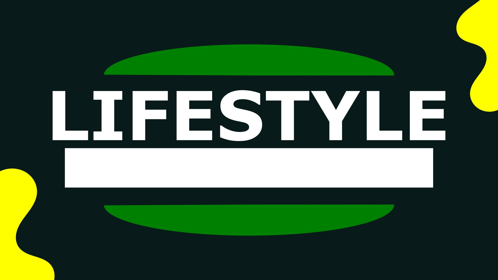

Logo
Stiker
Goodest .second
Logo Goodest.second menerapkan design yang simple sehingga mudah diingat oleh pelanggan.
Poster
Komik Ala-Ala
Membuat design cover komik dengan mengikuti tutorial youtube.
Stiker
Grateful For God
Mengimplementasikan pemikiran untuk bersyukur kepada Tuhan.

Logo
Stiker
Belajar di Luar
Pembuatan logo untuk akun youtube bernama Belajar di Luar.
Poster
Spanduk
Milor
Mengerjakan tugas Kewirausahaan untuk membuat ide bisnis beserta design-nya.
Poster
Hari Kartini
Mengikuti lomba design poster bertema memperingati Hari Kartini.
Nametag
Qurban 1444 H
Pembuatan design nametag untuk Panitia Qurban 1444 H.
Nametag
Qurban 1445 H
Pembuatan design nametag untuk Panitia Qurban 1445 H.
Stiker
Spanduk
Blok A
Membuat design Blok A untuk dicetak menjadi stiker ataupun lainnya.
Logo
Lifestyle
Contoh design yang dibuat untuk logo merk Lifestyle pada brand pakaian.